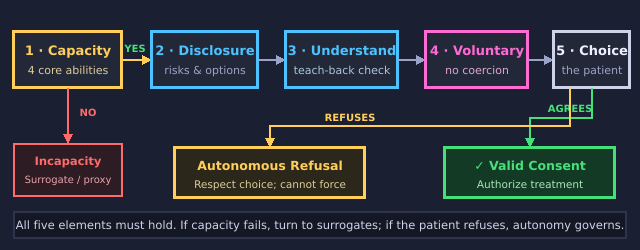
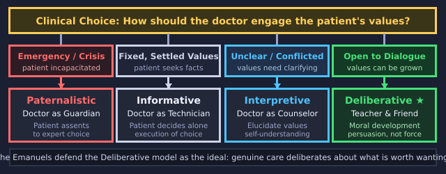

You're the new doctor in a village of talking animals. Your patients are clever, stubborn, and absolutely intend to make their own decisions.
Use → (or Next) to advance and to reveal points one at a time. F = fullscreen.
Welcome to House Calls in the Hedgerow. You're the new doctor in a village of talking animals. Your patients are clever, stubborn, and absolutely intend to make their own decisions. Whenever it's your turn, I'll stop and wait for you.
Your Job, Really
"Curing them is the easy part," the old doctor warns before retiring. "Respecting them is the trick."
Your first lesson comes before you've even seen a patient. The old doctor warns you that curing them is the easy part. Respecting them is the trick.
One question runs through the whole round: how much may you influence what a patient decides?
Push too hard and their choice stops being theirs. Say nothing and you have abandoned them to it.
You will learn what makes consent real, and then meet four doctors who answer that question four different ways.
Before Your First Patient
Five gut-checks, with no right answers. Just say where you stand. We will come back to them at the end.
A doctor should give the facts and then step back and let the patient choose.If a patient is making a clearly bad choice, a good doctor should talk them out of it.A patient can give valid consent even without really understanding the risks.Pressuring a patient "for their own good" is sometimes acceptable.Part of a doctor's job is helping patients work out what they truly value.Before your first patient, tell me where you stand. Rate each of these five statements. There are no right answers, and we'll come back to them at the end. When you've rated all five, press Submit.Saved. You'll come back to these at the end.
Why Consent Matters
Treatment without consent is something done to a patient, however well-meant it is. Consent is what makes it something done with them.
Treatment without consent is something done to a patient, however well meant. Consent is what makes it something done with them.
It's the practical face of respect for autonomy: their body, their call.
It is not one thing either. Valid informed consent has five ingredients.
Miss any one, and the "consent" is hollow.
1 · Capacity
Can this patient make this decision, right now? Capacity isn't intelligence, and it isn't whether they agree with you. It is four specific abilities:
The first ingredient is capacity. Can this patient make this decision, right now? Capacity isn't intelligence, and it isn't whether they agree with you. It's four specific abilities.
Understand the facts.
Appreciate that they apply to you.
Reason through the trade-offs.
Communicate a choice.
Capacity: Squirrel Nutkin
Nutkin arrives with an infected bite from taunting Old Brown the owl.
Let's work through capacity with a case. Nutkin arrives with an infected bite from taunting Old Brown the owl.
Untreated, the infection could kill him; he repeats this back accurately.
Yet he treats it as a joke: "Old Brown only just nicked me!"
He cannot take seriously that he might die, or weigh that against resting.
He understands the words but cannot appreciate that they apply to him.
2 · Disclosure
Peter is carried in with a hind leg broken in one of McGregor's snares, in the same garden that killed his father. Before he can choose well, he needs the whole picture:
The second ingredient is disclosure. Peter is carried in with a hind leg broken in one of McGregor's snares, in the same garden that killed his father. Before he can choose well, he needs the whole picture.
The diagnosis (a bad break) and the proposed treatment (setting and splinting the leg).
Its risks (weeks penned up unable to run; it may still heal stiff) and benefits (a real chance at a leg that works).
The alternatives, which are rest alone or a riskier operation. Also what happens if he does nothing: likely lasting lameness, and a slow rabbit does not last long.
Quietly drop one option and you've made the choice for him.
How Much Must You Tell?
Two standards answer "what counts as enough disclosure?"
How much must you tell? Two standards answer what counts as enough disclosure. The reasonable-physician standard says to disclose what a typical doctor would in your shoes. The risk is that it lets the profession decide what patients get to know. The reasonable-patient standard says to disclose what a typical patient would want to know to decide. It's the modern standard, from the 1972 case Canterbury versus Spence. It centers the patient.
Disclose what a typical doctor would in your shoes.
Risk: it lets the profession decide what patients get to know.
Disclose what a typical patient would want to know to decide.
The modern standard, from Canterbury v. Spence (1972). It centers the patient.
3 · Understanding
Telling is not the same as getting through. Politeness makes patients nod along.
The third ingredient is understanding. Telling is not the same as getting through. Politeness makes patients nod along.
Peter says "yes, set it," but secretly plans to raid the garden tomorrow.
So you check with teach-back: "What will the next weeks look like for you?"
Only when he says it back does it land: weeks splinted, unable to run.
That genuine dialogue is what consent rests on, not a polite nod.
4 · Voluntariness
A choice must be the patient's own, free of coercion and manipulation.
The fourth ingredient is voluntariness. A choice must be the patient's own, free of coercion and manipulation.
Jemima Puddle-Duck accepts the charming fox's offer of a quiet nesting shed.
Yet the fox conceals that dinner is her; her "yes" was engineered by deception.
In the clinic, half-truths that steer or coax a choice make consent hollow.
However sincere the patient's word, manipulated consent is not valid.
Influence: Fair vs Foul
Not all influence is wrong, and doctors should try to persuade. The line is how.
Not all influence is wrong, and doctors should try to persuade. The line is how. Persuasion is fair. It appeals to the patient's own reason with true, relevant arguments. For example, here's why bed rest really will get you back to mischief sooner. That's legitimate. Manipulation or coercion is foul. It bypasses reason with lies, pressure, or threats. Think of the fox's flattery and half-truths. That's consent extracted, not given.
Appeal to the patient's own reason with true, relevant arguments.
"Here's why bed rest really will get you back to mischief sooner." (Legitimate.)
Bypass reason with lies, pressure, or threats.
The fox's flattery and half-truths: consent extracted, not given.
5 · Authorization
Consent is an explicit act: the patient actually authorizes the plan, here and now.
The fifth ingredient is authorization. Consent is an explicit act. The patient actually authorizes the plan, here and now.
Approving in his head is not enough; Peter must say "go ahead, set the leg."
It is permission handed to you, not permission you assume you already have.
And it can be withdrawn: if Peter changes his mind, that choice counts too.
Consent is an active, ongoing authorization rather than a one-time signature.
The Consent Pathway
How clinical consent functions in practice: five sequential safeguards protect patient autonomy.
Here's how clinical consent works in practice. Five safeguards protect patient autonomy, in order. First, assess capacity. Then give adequate disclosure. Then verify understanding with teach-back. Then make sure the choice is voluntary, without coercion. That leads to the patient's authorization, or a respected refusal. If capacity is absent, turn to a surrogate. If it's present, a competent refusal must be honored.

The five ingredients in clinical sequence. If capacity is absent, turn to surrogacy; if present, competent refusal must be honored.
Test It: The Consent-o-Meter
Now test it with the consent-o-meter. Peter is alert and in pain, with a hind leg broken in McGregor's snare. You propose setting and splinting it. That means weeks of rest, a good chance of a working leg, and no guarantee. Toggle each element his case actually has. All five, or the consent is not valid. When you're ready, press Continue.
Toggle each element Peter's case actually has. All five, or the consent is not valid.
Capacity: he can understand and reasonDisclosure: you told him risks and optionsUnderstanding: teach-back confirmed itVoluntary: no coercion or manipulationAuthorization: he explicitly agreed
Name the Ingredients
Capacity to make this particular decisionDisclosure of the material informationUnderstanding of what was disclosedVoluntariness — a choice free of manipulationAuthorization — actually agreeing to the planThe doctor approves of the patient's choiceA witness signs the consent formName the ingredients. Check every genuine element of valid informed consent, then press Check answers.Right. Capacity, disclosure, understanding, voluntariness, and authorization. A doctor's approval or a witness's signature might be on the form, but neither is what makes consent valid.
Diagnose the Defect
CapacityDisclosureUnderstandingVoluntarinessAuthorizationNutkin repeats every risk back, but laughs that a nick could never kill himThe fox flatters Jemima and plays on her vanity until she says yesYou explain splinting to Peter, but never mention rest alone as an optionPeter nods politely, but can't say what the next weeks will be likePeter approves the plan in his head, but never says go aheadA doctor threatens to tell Peter's mother unless he agreesDiagnose the defect. Each case has one defect. Sort each case under the ingredient of consent that is missing. When every case is placed, press Check answers.Right. Capacity is the ability to decide. Disclosure is what you tell. Understanding is whether it landed. Voluntariness rules out manipulation and threats. Authorization is the patient actually saying go ahead.
When the Rules Bend
A few situations modify (but don't abolish) consent:
A few situations modify consent, but they don't abolish it.
Emergencies: if a patient is unconscious and the need is urgent, consent is presumed.
Waiver: a competent patient may choose not to be informed, within limits.
Incapacity: when a patient genuinely cannot decide, you turn to a surrogate, guided by the patient's wishes and interests.
Four Ways to Be a Doctor
Peter's leg has healed, and he tells you he is going straight back to McGregor's garden, the one that snared him and killed his father.
Now, four ways to be a doctor. Peter's leg has healed. He tells you he's going straight back to McGregor's garden, the one that snared him and killed his father.
Run the five ingredients. He has capacity, you disclosed the risk, he understood it, nobody pressured him, and he authorized his own discharge.
The consent is perfect. Every box is ticked. And he is going to be killed in that garden.
So consent was never the whole job. Ezekiel and Linda Emanuel (1992) mapped four answers to what is left of it.
Model 1 · Paternalistic
The doctor as guardian: you determine what is best and the patient assents.
Model one is the paternalistic doctor, the doctor as guardian. You determine what is best, and the patient assents.
With Peter: you refuse to discharge him, or you tell his mother. The garden is not up for discussion.
Autonomy here shrinks to assenting to what the expert has already decided.
Fine in a true emergency. Presumptuous almost everywhere else, and it makes his valid consent count for nothing.
Model 2 · Informative
The doctor as technician: you supply the facts; the patient supplies the values and chooses.
Model two is the informative doctor, the doctor as technician. You supply the facts. The patient supplies the values and chooses.
With Peter: nothing. You told him the risk, he understood it, he chose. Your job finished when the consent did.
Autonomy = control: the patient picks, you execute. Mrs. Tiggy-Winkle wants precisely this.
The risk: a doctor reduced to a vending machine, watching a patient walk into a garden that killed his father.
The Two Extremes
Here are the two extremes. In the paternalistic model, the doctor chooses and the patient assents. The doctor says, I know what is best for you, Peter. Carrots, no garden. In the informative model, the doctor informs and the patient chooses unaided. The doctor says, here are the facts and the options. Your call entirely.
The doctor chooses; the patient assents.
"I know what is best for you, Peter. Carrots, no garden."
The doctor informs; the patient chooses unaided.
"Here are the facts and the options. Your call entirely."
Model 3 · Interpretive
The doctor as counselor: you help the patient figure out what they already value, then choose to fit it.
Model three is the interpretive doctor, the doctor as counselor. You help the patient figure out what they already value, then choose to fit it.
With Peter: you ask what the garden is really for. Is it the carrots, or is it proving something to himself about his father?
You help him put that into words, without adding any view of your own about what he ought to want.
Autonomy = self-understanding: choosing in line with who he actually is, once he can see it.
Model 4 · Deliberative
The doctor as teacher and friend: you engage the patient about which health-related values are worth pursuing, and you try to persuade without ever coercing.
Model four is the deliberative doctor, the doctor as teacher and friend. You engage the patient about which health-related values are worth pursuing. You try to persuade, without ever coercing.
With Peter: you tell him you think he is wrong, and you say why. Then you leave the decision with him.
"A braver life needn't be a reckless one." That is an argument, openly made, and he may reject it.
Autonomy = moral self-development: growing through honest deliberation, not merely being left alone.
Clarify vs Develop
Clarify versus develop. The interpretive doctor helps the patient uncover and apply the values they already have. Something like, let's name what matters most to you, and choose to match it. The deliberative doctor engages the patient on which values are worth adopting. That means persuasion, not pressure. Something like, may I make the case that a longer life with your sisters is worth more than the thrill?
Help the patient uncover and apply their existing values.
"Let's name what matters most to you, and choose to match it."
Engage the patient on which values are worth adopting. Persuasion, not pressure.
"May I make the case that a longer life with your sisters is worth more than the thrill?"
Mapping the Four Models
How a physician should engage depends on clinical urgency and the state of the patient's values.
Here are the four models, mapped. How a physician should engage depends on clinical urgency and the state of the patient's values. Emergencies call for the paternalistic model. Settled values call for the informative technician. Conflicted values call for the interpretive counselor. Growing values call for the deliberative teacher and friend. These are four answers to how far a doctor may go once consent is secured. The Emanuels defend the deliberative one as the caring ideal.

Four answers to how far a doctor may go once consent is secured. The Emanuels defend Deliberative as the caring ideal.
Name That Model
Peter's leg will heal, and he is already itching to go back to the garden that killed his father. Identify the model each doctor is using.
Name that model. Peter's leg will heal, and he is already itching to go back to the garden that killed his father. Read what each doctor says, and identify the model that doctor is using. When you're ready, press Continue.
“I've cancelled your garden privileges and put you on a carrot regimen. Doctor knows best.”
“Here are the risks of garden-raiding and three diets. Tell me which you'd like and I'll set it up.”
“Let's work out what matters most to you — the thrill, or years with your sisters — and choose to fit it.”
“Can I make the case that courage isn't the same as recklessness? Let's talk about what's actually worth wanting.”
Which Model Is It?
PaternalisticInformativeInterpretiveDeliberative"You're staying in bed for a month. I've already told your mother, and that's final.""I'll give you the facts and the odds. What you do with them is entirely up to you.""Is the garden about the carrots, or about your father? Let's name what you care about and choose to fit it.""Let's find out what matters most to you, without me adding any views of my own.""I think going back is a mistake, and here's why. But the choice is yours.""I want to persuade you that courage and recklessness are different things. Hear me out, then decide."Which model is it? Six doctors talk to Peter about the garden. Sort each line under the model that doctor is using. When every line is placed, press Check answers.Right. The paternalistic doctor decides. The informative doctor gives the facts and leaves the values to Peter. The interpretive doctor helps him see the values he already has. The deliberative doctor argues that some values are worth more, and leaves the decision with him.
Sort the Models
Paternalistic: the doctor decides and the patient assentsInformative: the doctor gives facts and the patient choosesInterpretive: the doctor helps clarify the patient's own valuesDeliberative: the doctor engages the patient on which values are worth pursuingInformative: the doctor decides and the patient obeysDeliberative: the doctor stays silent about valuesSort the models. Check each statement that correctly describes one of the Emanuels' models, then press Check answers.Nicely sorted. The checked items match each model's role. The two left unchecked swap the models' jobs around.
The Emanuels' Verdict
The Emanuels don't leave all four as equals. They argue for one as the ideal:
The Emanuels don't leave all four as equals. They argue for one as the ideal.
The deliberative model, physician as teacher and friend, best fits a caring relationship.
The paternalistic model is justified mainly in emergencies.
The informative model, they argue, is too thin. It abandons the patient to choose alone.
The aim isn't to impose values, but to care enough to deliberate about them.
Decision Point: Which Would You Want?
Not graded. You rated something close to this before the clinic opened.
Give me the facts, accurately and completely, and then let me decide.Help me work out what I actually want, then respect what I land on.Tell me honestly what you think I should do, and why.Decision point: which would you want? This one isn't graded. You rated something close to this before the clinic opened. You are the patient, and the decision is a hard one. Which doctor do you want in the room? Pick the answer closest to your view, and read its note.The Emanuels argue for the deliberative model. Notice what your answer costs. The informative doctor respects you and leaves you alone with it. The deliberative doctor engages with your values, which means a doctor with opinions about your values.
Which Model Wins?
It gives the doctor too much influence over which values the patient ends up holding.It fails to secure valid informed consent from the patient.It leaves the patient to choose alone, which is not the same as respecting him.It gives the patient more information than he is able to use.Which model wins? The Emanuels defend the deliberative model as the ideal. On their argument, what is wrong with the informative model? Pick an answer.Right. The informative doctor secures consent flawlessly, so whatever is wrong with her, it isn't a failure of consent. The Emanuels say she has confused respecting a patient with leaving him alone.
Revisit Your Instincts
Here is where you started this morning. Re-rate each one and see whether the day shifted anything. Staying put is fine; the question is whether you can now say why.
Here's where you started this morning. Re-rate each statement and see whether the day shifted anything. Staying put is fine. The question is whether you can now say why. When you've rated them all, press Submit.Saved. Now, a quick wrap-up of your rounds.
End of Rounds
You close the bag. The hedgerow is quiet, and your patients are still in charge of their own lives.
You close the bag. The hedgerow is quiet, and your patients are still in charge of their own lives.
Peter's consent was valid on all five counts, and the hard question survived it intact.
That is what the four models are for: four answers to how far you may go once the form is signed.
Push past persuasion and you destroy the voluntariness that made the consent real.
So autonomy is more than leaving people alone. Help them decide well, then let them decide.
Visit every slide, answer every question, and submit both belief probes to complete your rounds.
For Further Reading
If you'd like to go further, here are some good places to start, each with a note on why it's worth your time. Thanks for playing.
Nir Eyal, “Informed Consent,” Stanford Encyclopedia of Philosophy (2011, rev. 2025). A free overview of why consent matters and what makes it valid.
Ruth R. Faden and Tom L. Beauchamp, A History and Theory of Informed Consent (Oxford University Press, 1986), chapters 8–10. Competence, understanding, and persuasion versus manipulation, in depth.
About this lesson. Brendan Shea, PhD, wrote this lesson with help from AI tools. Claude (Anthropic) helped draft the text and code and check facts, and the illustrations were made with AI image generators. The narrator's voice is synthetic (Google Gemini text-to-speech). The author reviewed everything and is responsible for any errors.